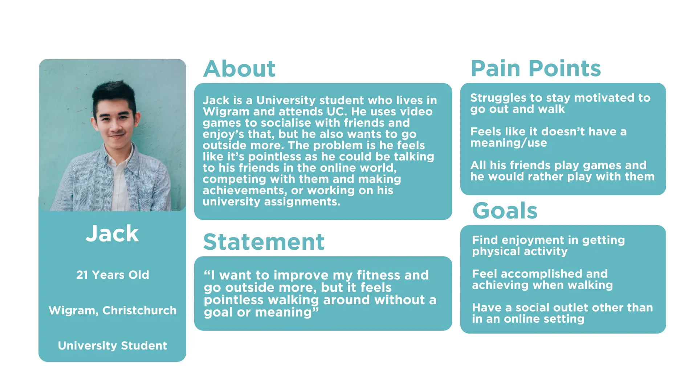
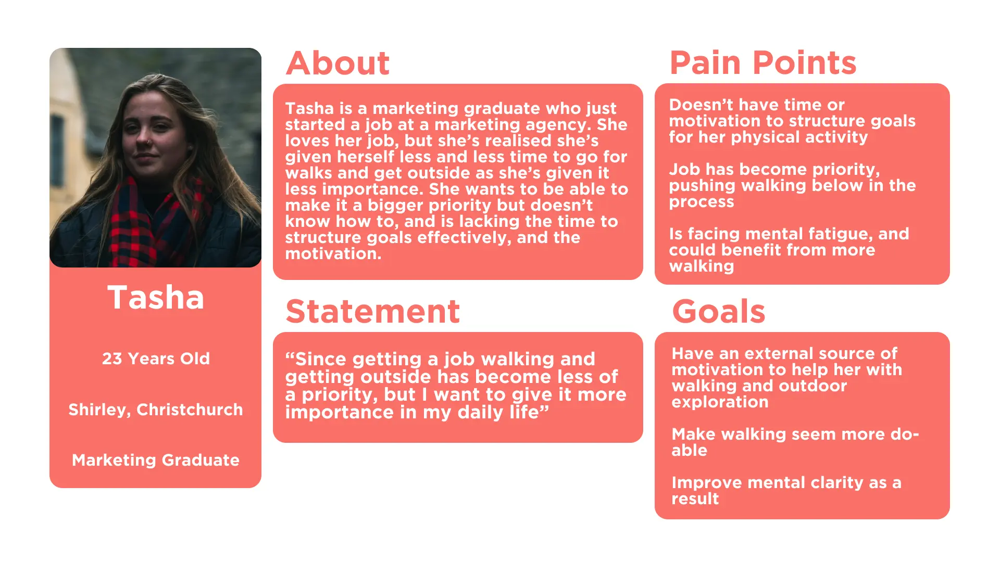
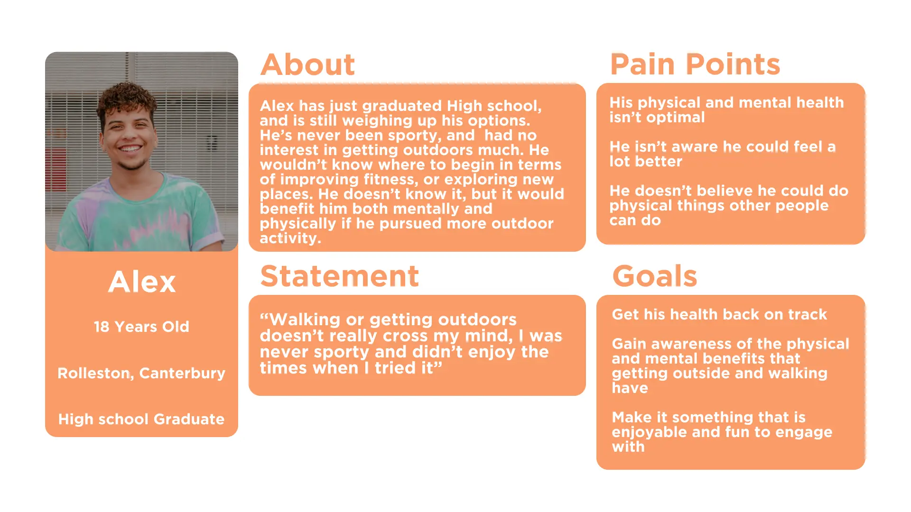

The Brief
Create and compile a design solution or creative project that explores your passion within the field of media design.
Research
Market Research
To get a good understanding of what apps were out there that utilised gamification and encouraged nature exploration, I conducted some case studies of different apps and what they offered.
Research Question
How can a gamified mobile app be designed to help motivate and facilitate outdoor exploration among 18-24-year-olds?
Problem and Solution
Problem
How could we reconnect young adults with the outdoors and each other in a form that they would receive and respond to?
Solution
Utilise gamification to create a mobile app that motivates and facilitates outdoor exploration among those young adults
Experiments
Experiment 1
For my first experiment, I investigated the Octalysis Framework. A framework developed by Yu-Kai Chou that lays out gamification in an 8-point framework

-
First, I created a brainstorm/sitemap before using the framework

-
I then brainstormed ideas for the app using the Octalysis framework

-
Finally, I created a brainstorm/sitemap after utilising the Octalysis framework

Experiment 2
For the second experiment, I analysed the visual messaging and design language used by other gamified apps: Duolingo, SoloLearn, Mimo, and 1Question.

From this, I found that the apps had a lot of common themes, such as vector illustrations with rounded edges, bright colours, positive visual messaging, and anthropomorphisms. I also found some research papers that studied the effect of this style of visual messaging in education.
-
I then created some designs in three similar styles using the information I'd learned from other apps and studies


I surveyed these designs and discovered that the results were quite close and subjective at times, but overall option 2 seemed to be the favourite

Personas
-
At this point, I also created three personas to try and gain a better understanding of the target audience



Experiment 3
At this point, I began prototyping. I created a Lo-Fi prototype and tested it among three members of the target audience.

For the Lo-Fi, I had created an explore tab for discovering walks in your area or that you already walk, trail pages providing information on each walk, a community tab to find walkers in your area and what their opinions are on walks, a navigate tab for tracking your walk so you can review and share it, a quests tab for completing daily challenges and earning badges, a league tab for competing with others at a similar level and with friends, and a profile tab for displaying your stats, your reviewed walks, and your awards.
Valuable feedback I took away from the tests were :
- I found that people didn’t think that the monthly badge was required and wasn’t a factor that would be motivating to them
- People thought that live weather updates from tracks using devices would be good
- It was recommended to make the trail search interface more immersive like Tiktok
- Relabel the following tab friends
- Investigate league progression further
- Make the navigation tab more interactive for better test
- The navbar seems like its too crowded too many options
Experiment 4
Here I explored how I could further integrate the ‘Social Influence and Relatedness’ and ‘Development and Accomplishment’ points from the Octalysis Framework to enhance the app experience.

I made some changes to further enhance the app through Social Influence and Relatedness’ and ‘Development and Accomplishment’. Firstly, I removed the monthly badge page, as this wasn’t found to be a big motivator, and replaced it with an events section that is integrated into the leaderboard tab and features social events where people can meet and competitions and challenges where people can earn awards.
I also made various other suggested changes, but I also missed a couple potential features, with one being league progression and how this affects users, and two being accomplishment interactions rewarding users for positive behaviour.
I conducted 3 more user tests using this prototype and what I found was:
- The overall aesthetic design of the app needs improvement
- Trophy cabinet could be organised based on rarity/value
- Use engaging, interesting designs for trophies and leagues
- Make track selection in navigate tab more logical, search for track > select track
- Further prototype the join events and competition pages
- Change posts designs, may look slightly blocky
- Could add search filter for community
Annotated Bibliography
At this point, I also finalised an annotated bibliography, which I had been creating to have a list of validated resources to reference in my research poster
Experiment/Refinement 5
By the 5th experiment, it was more about refining towards a finished product than experimenting to discover more insights. During this time, I tied together Octalysis concepts, prototype development, and visual design research to reach a high-fidelity prototype.
Explore & Community User Flows

Leaderboard & Profile Tabs User Flows

Navigate Tab User Flow

Experiment/Refinement 6
For this final experiment/refinement I created a coded app using HTML/CSS/JS. I also wrote an essay for the report poster going over the whole experimentation process, and what the outcome was.
A video walkthrough of the app as well as the report poster can be seen at the top in the result section
Future Development
As this project was an experimental process that was more focused on the process than the end result, going forward, a lot of things could be enhanced or added to make this project more complete. Some of the main future developments that would be beneficial include:
- Apply graphic visual design across the whole app
- Implement those other Octalysis features
- Create further branding to complement the design style
- Create 10 Images in best awards format